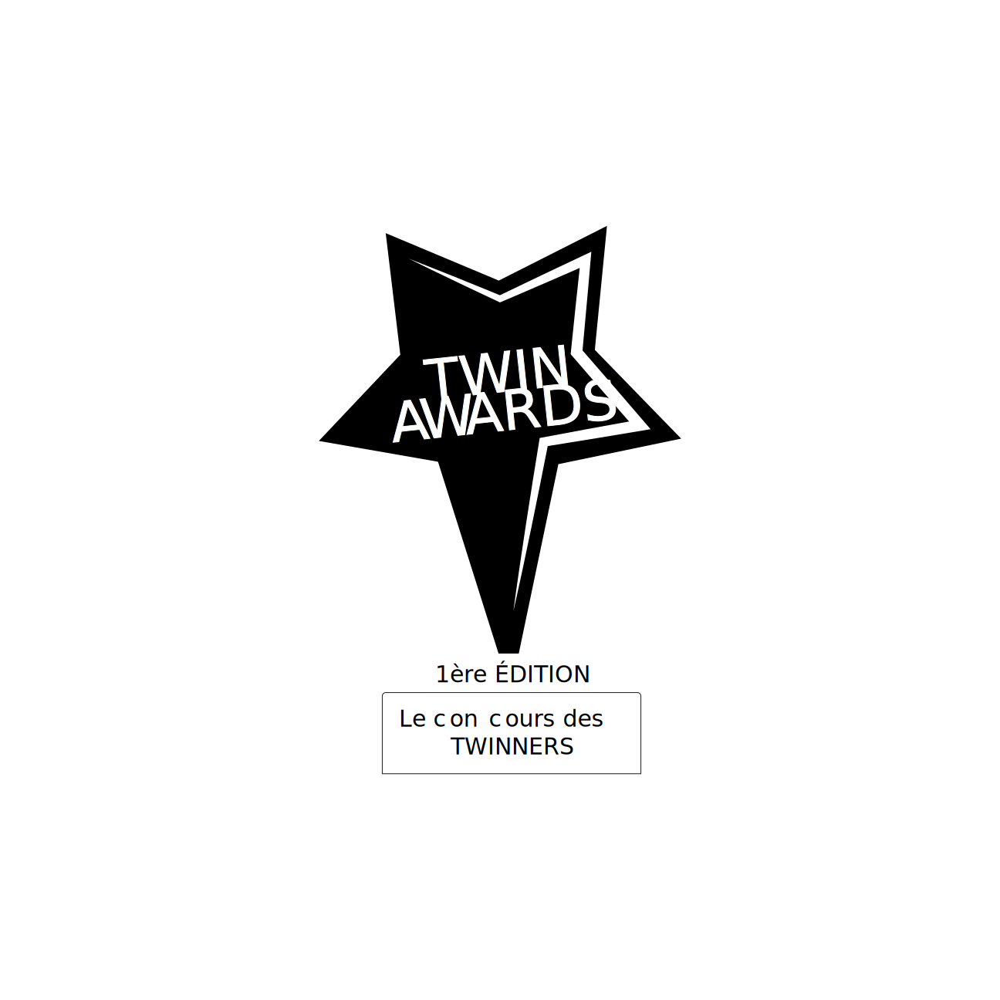

TWIN AWARDS
Bienvenue dans le concours des twinners.
Êtes-vous prêt à plonger dans l'univers de ce jeu concours ?

Comment ça marche ?
Créer un compte
Créer un compte est gratuit et rapide !
Être en Twin
Faire partir des étudiants de la filière TWIn de l'ESATIC
Voter
Voter dans toutes les catégories et surtout le ou la TWINNER de cette édition
Pourquoi Twin Awards ?
Twin Awards
Twin awards a été créé et pensé par les étudiants de la twin dans le cadre de se divertir après une année scolaire très coincée. Elle vise à rassembler et créer les liens de famille entre les étudiants de la classe.
Quelques chiffres
Effectif
19
Garçons
3
Filles
Alors qu'attends-tu pour aller voter ?
Réjoins nous dans cette aventure en votant ton twinner dans chaque catégorie.
Voter maintenantQuelques catégories
Nous vous proposons quelques catégories de TWIN AWARDS